吉卜力怎麼選圖？
龍貓、神隱少女、霍爾的移動城堡，是「自己帶圖創作」裡僅次於迪士尼的熱門主題。吉卜力作品的畫風比較統一，不像迪士尼有明顯的 2D／3D 分野，但同樣有畫面複雜度的差異——整理目前真實學員作品，讓你先參考，再傳圖片給我們確認詳細評估。
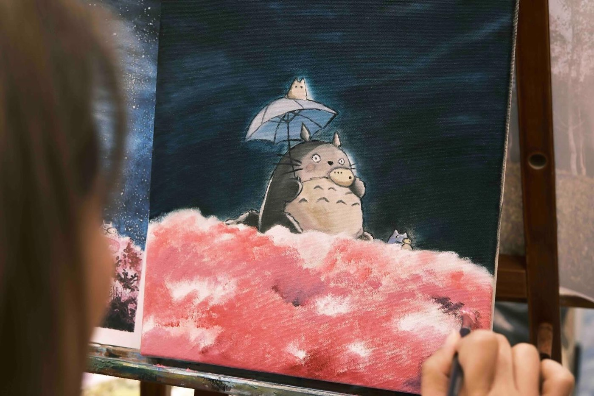
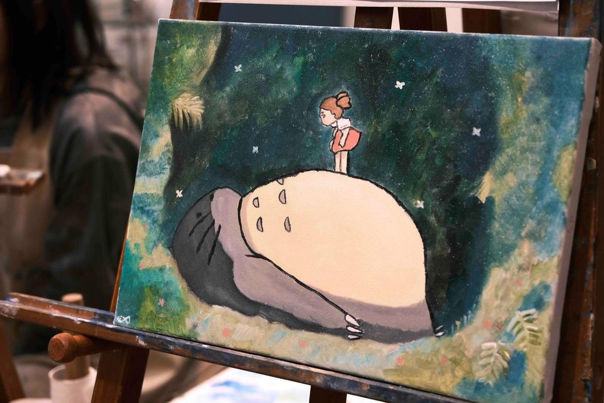
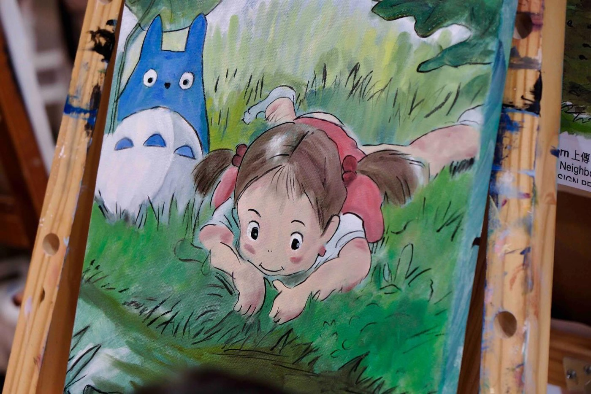
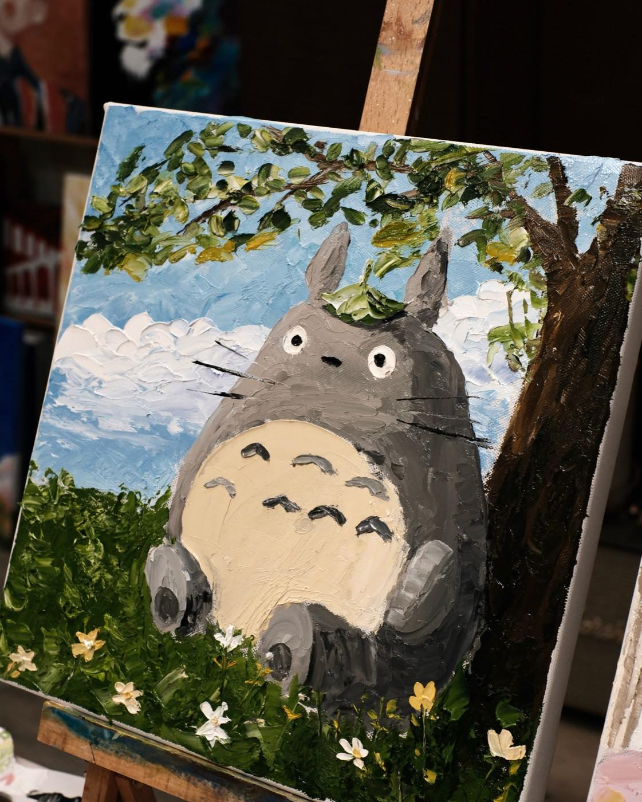
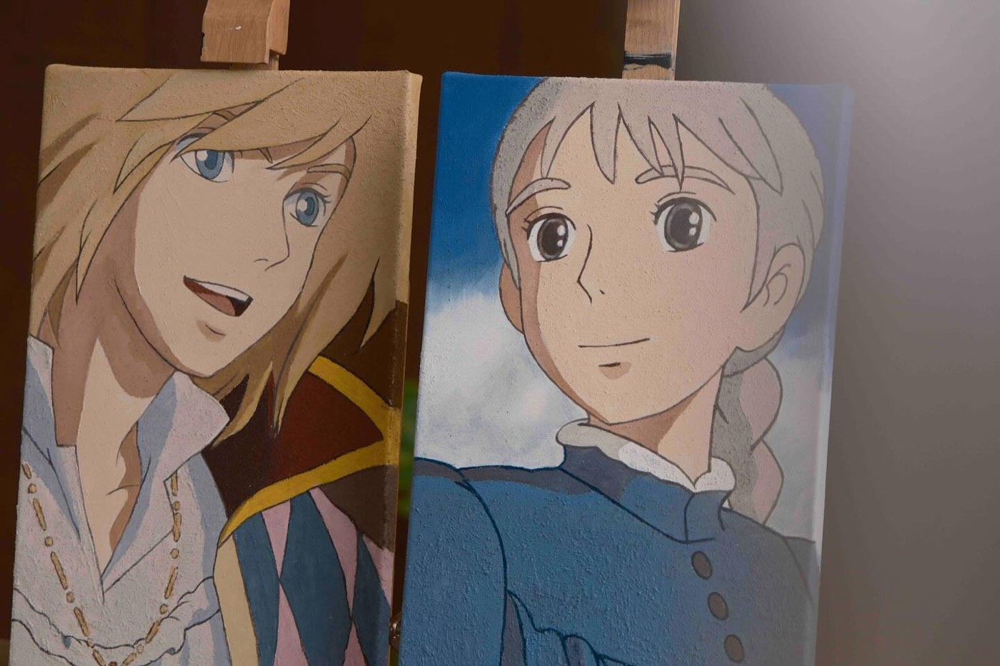
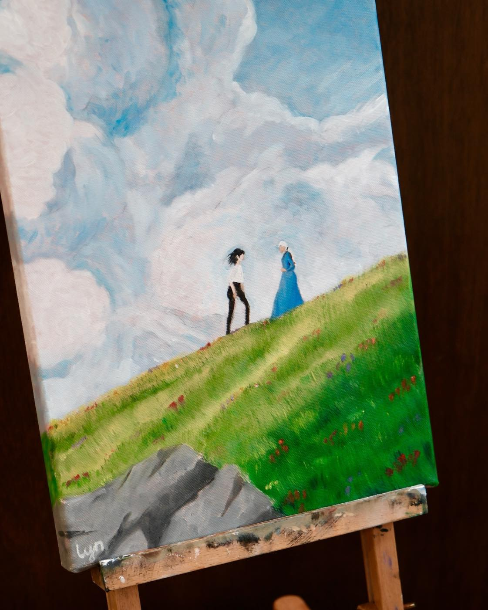
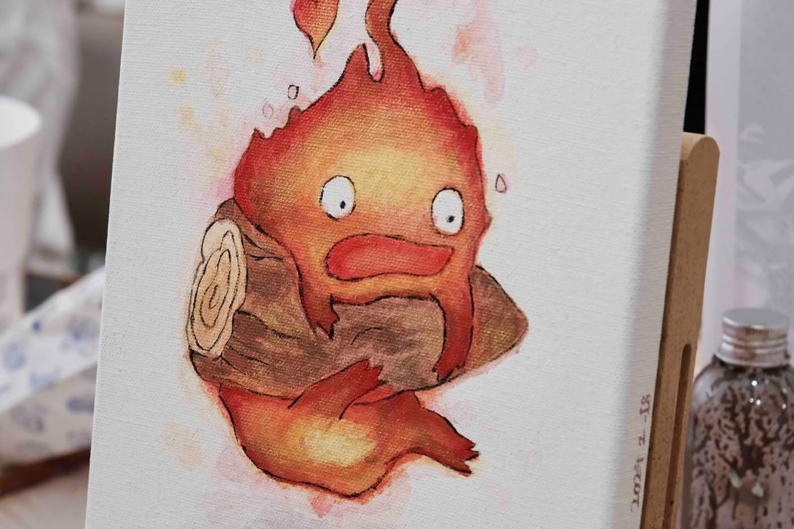
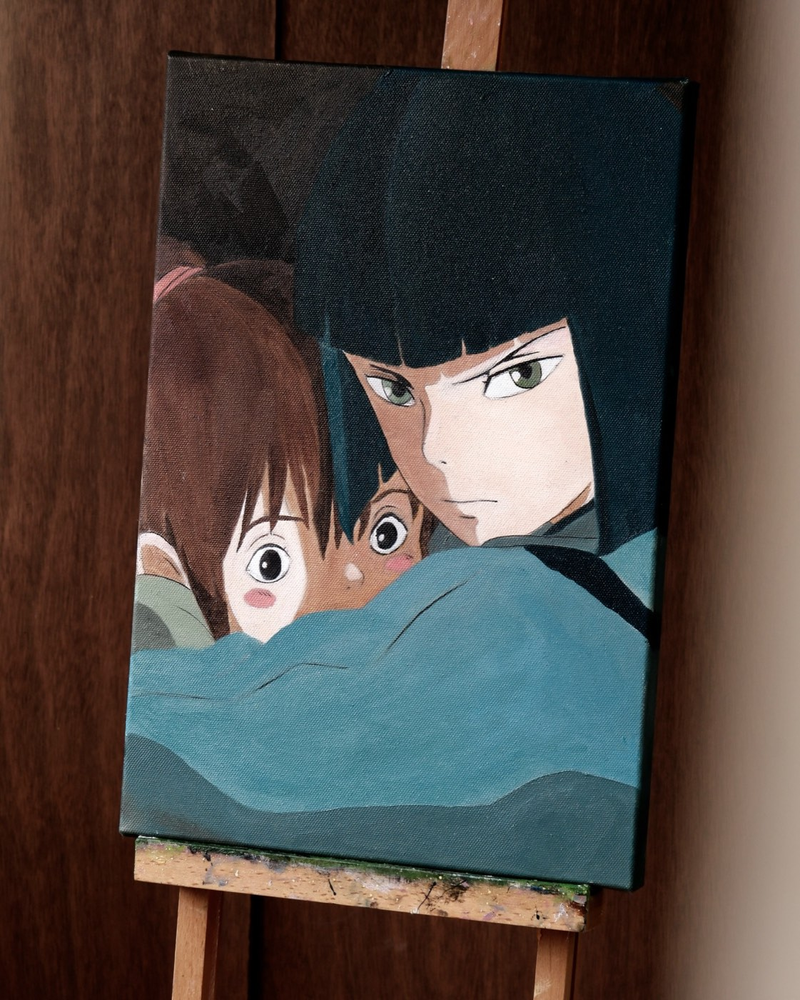
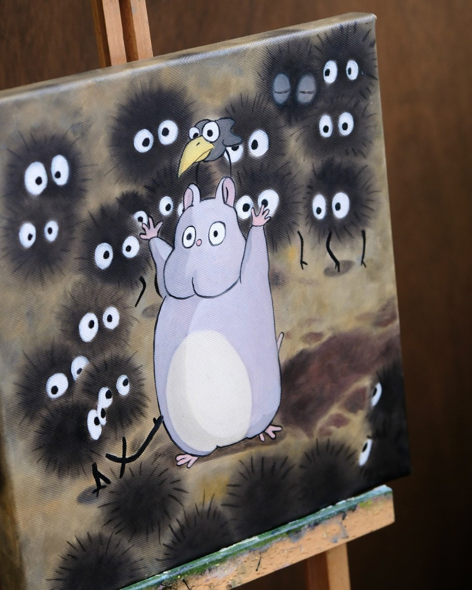
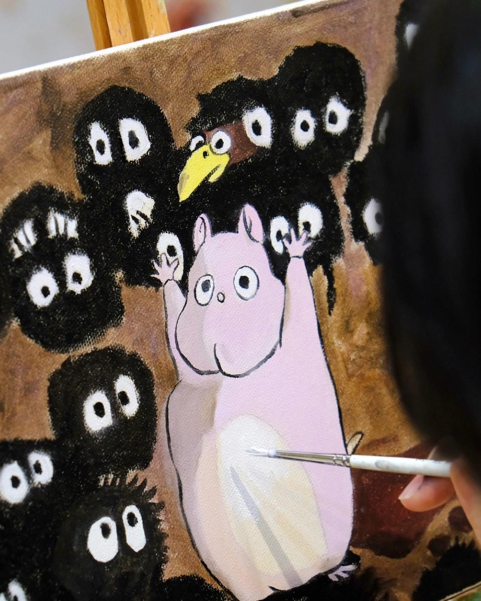
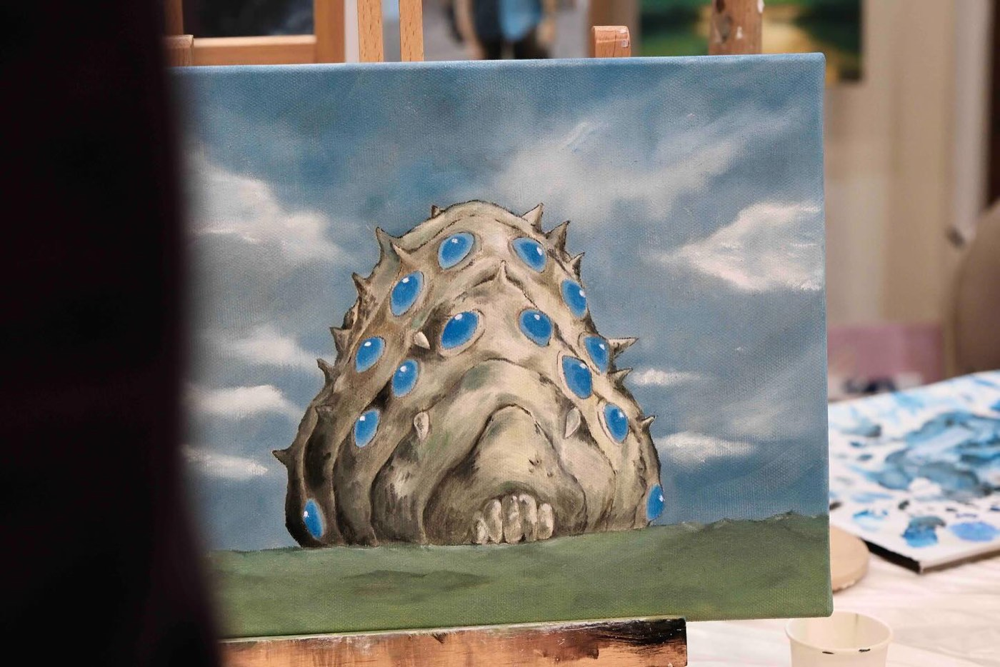
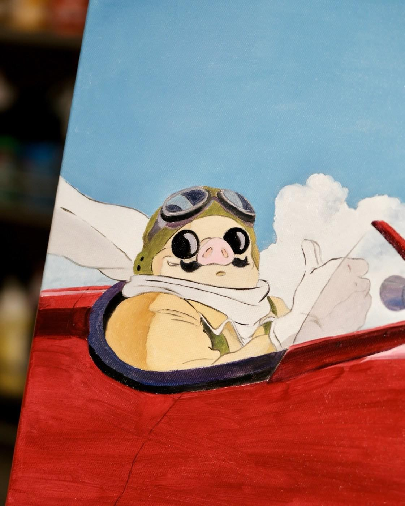
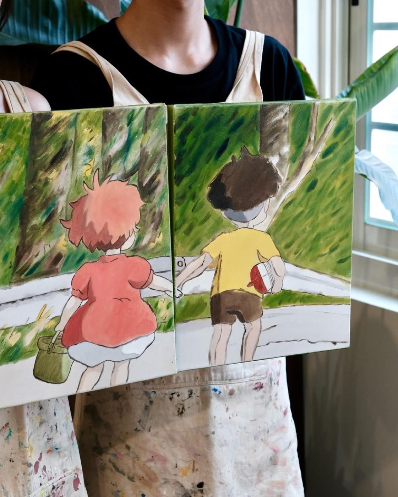
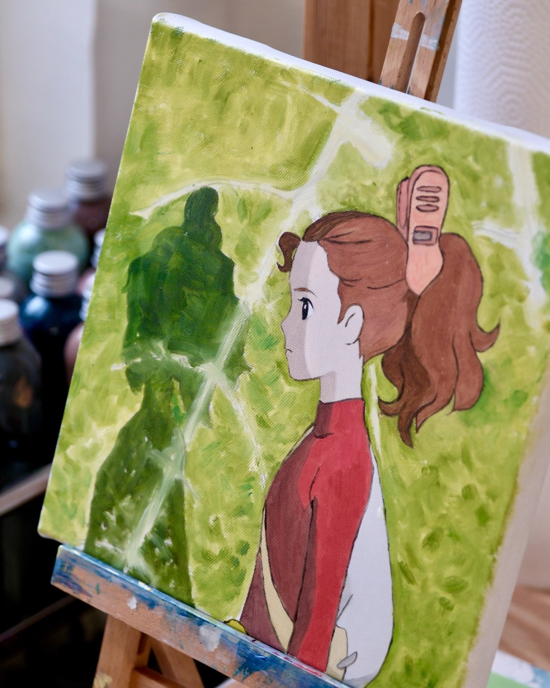
學員作品一次看
目前學員畫過的吉卜力角色，橫跨霍爾的移動城堡、龍貓、風之谷、神隱少女、借物少女艾莉緹、崖上的波妞、紅豬這幾部作品。
怎麼觀察難易度
吉卜力作品整體是手繪水彩／油畫質感的畫風，不像迪士尼那樣有明顯的 2D／3D 分野，但從目前的真實作品看下來，還是有幾個會影響完成時間的重點：
角色數量：單一角色特寫（像卡西法、王蟲、波魯克）通常一堂就能完成；畫面裡有兩個以上角色互動（像霍爾＋蘇菲兩幅並排、白龍＋千尋依偎），需要多處理角色之間的構圖關係，花的時間會比單一角色多。
背景複雜度：神隱少女的煤炭精靈場景，背景有大量重複的小角色，每隻都要畫出各自的眼睛跟絨毛質感，細節量本來就比單一主體多，會拉長完成時間。
同樣的場景，也會因為每個人想畫多細而不同
下面這兩幅都是神隱少女煤炭精靈場景，構圖幾乎一樣——但一件一堂完成，一件花了 2 堂。差別不是圖本身變難，是同學自己想把細節畫到什麼程度：每一隻煤炭精靈的絨毛質感、眼睛的立體感，想畫得愈細緻，自然需要愈多時間堆疊。
精緻度本來就會因為每個人的個性、耐性而不同，對畫面要求比較高的同學，可以安排多一點堂數慢慢把細節畫出來；想快速完成留個紀念的同學，一堂完成的版本也很完整，沒有一定要畫到多細的規定。
這只是大概的觀察
以上是從目前真實學員作品歸納出來的大致傾向，不是固定公式——同一個角色選不同的構圖、不同的畫面細膩度，完成時間也會不一樣。想畫的畫面，還是把圖片傳給我們評估最準確。